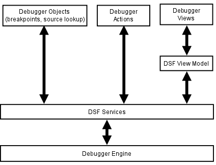

Introduction to Programming with DSF
Summary
This tutorial intorduces the reader to common techniques and patterns
used in the Debugger Services Framework (DSF), which is developed by
the C/C++ Development Tools
(CDT)
project. It also gives a good overview of the framework's
more advanced features.
Table of Contents
Copyright
Copyright (c) 2008, 2010 Wind River Systems and others. All rights
reserved. This program and the accompanying materials are made
available under the terms of the Eclipse Public License v1.0 which
accompanies this distribution, and is available at
http://www.eclipse.org/legal/epl-v10.html
Contributors:
- Wind River Systems - initial content
Introduction
The Debugger
Services Framework
is a new API for integrating debuggers into Eclipse. It is an
alternative to the Standard Debug Model API in Platform and it
leverages the new Flexible Hierarchy API that allows
extensive control over the debugger views' contents. It is also
designed to help achieve better performance when debugging applications
on slow or remote targets. The diagram below shows the elements used in
typical debugger integration and where DSF fits in.

|
| HIgh
level view of elements used in a typical DSF-based debugger integration
in Eclipse. |
1 Examples
Running example code and performing included exercises is very
helpful in following this tutorial. In order to run the examples
in this tutorial the following is needed:
- Download and install the Eclipse SDK 3.6 (http://download.eclipse.org/eclipse/downloads)
- Install the Eclipse IDE for C/C++ 6.1 and DSF:
- Using Update Manager, install the Programming Languages -> Eclipse C/C++
Development Tools feature found in
the Helios
Discovery Site (http://download.eclipse.org/releases/helios).
- Check out the org.eclipse.cdt.examples.dsf
plugin, found in the /cvsroot/tools
CVS repository under the org.eclipse.cdt/dsf
directory.
- Build the examples plugin:
- Execute the build the first time to build and run the
exercises preprocessor.
- Refresh the resources in the plugin (right-click on project in Navigator and select Refresh), in order to recognize the
sources generated by the preprocessor.
- Build the plugin again to compile the generated sources.
- Turn off the preprocessor so that edits made as part of the tutorial are not overwritten. Open Project
Properties, choose Builder and uncheck "PreProcessor".
- Launch the examples
- Examples in data org.eclipse.cdt.examples.dsf.requestmonitor
and org.eclipse.cdt.examples.dsf.dataviewer
packages each contain a public
main() function. They can be launched using the Java Application
launch type.
- The timers example in org.eclipse.cdt.examples.dsf.timers
requires an Eclipse Application to be launched (see the Timers Example section for more details).
2 Asynchronous Methods
One of the central features of DSF is that it relies very heavily on
the use of asynchronous methods. Asynchronous methods here mean
simply methods that use a callback
object to indicate their completion. The use of asynchronous
methods can be very contagious in a system, where if a lower level API
is composed of asynchronous methods, a higher level system which uses
those methods also has to have asynchronous methods in its interface
(or risk blocking its calling thread).
2.1 Request Monitor
There is a standard callback object used in DSF, the request
monitor. A request monitor has the following features:
- Executor - A
argument to the request monitor constructor allows the user to specify
what executor should be used to invoke the callback method.
- Status -
Asynchronous methods that take a callback can always set the status
indicating the success or failure of the call.
- Callback Methods
- The request monitor declares several protected methods which are
invoked when the callback is invoked: handleCompleted(), handleOK(),
handleError(), etc. The users may override these methods as
needed to perform additional processing upon asynchronous method
completion.
- Parent Request
Monitor
- If the method calling an asynchronous method is itself asynchronous,
it may set its argument request monitor as the parent of the request
monitor it is creating. The parent request monitor will be
automatically invoked when the lower level request monitor is completed.
Following is the snippet from a the
"hello world" example of using a
request monitor:
org.eclipse.cdt.examples.dsf.requestmonitor.AsyncHelloWorld
|
|
26: public class AsyncHelloWorld {
28: public static void main(String[] args) {
29: Executor executor = ImmediateExecutor.getInstance();
30: RequestMonitor rm = new RequestMonitor(executor, null);
31: asyncHelloWorld(rm);
32: }
34: static void asyncHelloWorld(RequestMonitor rm) {
35: System.out.println("Hello world");
36: rm.done();
37: }
|

|
Sequence diagram of the
AsyncHelloWorld example.
|
Exercise 1: A common
problem in DSF is implementing nested asynchronous methods, this
exercise adds a second-level asynchronous method to
AsyncHelloWorld.
Look
for comments preceded with "// TODO Exercise 1" in the
org.eclipse.cdt.examples.dsf.requestmonitor.AsyncHelloWorld
module.
|
2.2 Data Request
Monitor
The base request monitor is useful for returning
status of the
asynchronous method, but they do not have an option of returning a
value to the caller. DataRequestMonitor can be used for that
purpose. A simple example of using the data request monitor:
org.eclipse.cdt.examples.dsf.requestmonitor.Async2Plus2
|
|
22: public class Async2Plus2 {
23:
24: public static void main(String[] args) {
25: Executor executor = ImmediateExecutor.getInstance();
26: DataRequestMonitor<Integer> rm =
27: new DataRequestMonitor<Integer>(executor, null) {
28: @Override
29: protected void handleCompleted() {
30: System.out.println("2 + 2 = " + getData());
31: }
32: };
33: asyncAdd(2, 2, rm);
34: }
36: static void asyncAdd(int value1, int value2, DataRequestMonitor<Integer> rm) {
37: rm.setData(value1 + value2);
38: rm.done();
39: }
40: }
|
- Lines 26-27 create the data request monitor using a local class
declaraion. Note the type parameter to DataRequestMonitor allows
for compiler checking of the type when calling getData() and setData()
methods.
- Lines 29-31 override the standard callback to print the result of
the calculation to the console.
2.3 Multi-Request
Monitor
A common problem when using asynchronous is that several asynchronous
methods need to be called in parallel, so the calling method needs to
somehow manage the completion of several request monitors.
CountingRequestMonitor can be used for this purpose. It is
configured such that it's done() method needs to be called a count number of times before the
callback method is invoked.
The following snipped from the AsyncQuicksort example shows a simple
example of using the CountingRequestMonitor:
org.eclipse.cdt.examples.dsf.requestmonitor.AsyncQuicksort.asyncQuickSort()
|
|
42: static void asyncQuicksort(final int[] array, final int left,
43: final int right, final RequestMonitor rm)
44: {
45: if (right > left) {
46: int pivot = left;
48: int newPivot = partition(array, left, right, pivot);
49: printArray(array, left, right, newPivot);
51: CountingRequestMonitor countingRm = new CountingRequestMonitor(fgExecutor, rm);
52: asyncQuicksort(array, left, newPivot - 1, countingRm);
53: asyncQuicksort(array, newPivot + 1, right, countingRm);
54: countingRm.setDoneCount(2);
55: } else {
56: rm.done();
57: }
58: }
|
- Line 51 creates the CountingRequestMonitor. Its parent
request monitor is set to the request monitor from the
asyncQuicksort() argument. This parent request monitor is
automatically called when the counting request monitor is completed.
(see note)
- Lines 52 and 53, use the same instance of counting request
monitor when calling the sub-routine. Each sub-routine will call
done() on the counting request monitor.
- Line 54 sets the count to the number of sub-routines called with
the counting request monitor. Note that the done count can be set
after calling the sub-routines, because the counting request monitor
will not be completed until the count is set.
- Line 55: Don't forget to complete the request monitor in all
execution paths!
Note: The use of a parent request
monitor can simplify the code when implementing nested asynchronous
methods, since the parent requrest monitor is automatically completed
when the child requrest monitor is completed. Unfortunately,
failing to specify a parent request monitor when it is expected can
sometimes lead to bugs.
|
Exercise 2: Converting a
synchronous method into an asynchronous one is another common task in
DSF. This exercise converts the AsyncQuicksort.partition()
method into asynchronous AsyncQuicksort.asyncPartition().
Look
for comments preceeded with "// TODO Exercise 2" in the
org.eclipse.cdt.examples.dsf.requestmonitor.AsyncQuicksort
module.
|
3 Concurrency
The simple examples in previous section used asynchronous method
signatures, however no real asynchronous work was performed since all
execution was performed in the main thread. This section examines
a more typical example of a problem that DSF is intended to solve: a
viewer and an asynchronous data generator.
The IDataGenerator interface contains the following two asynchronous
data access methods:
org.eclipse.cdt.examples.dsf.dataviewer.IDataGenerator
|
|
49: void getCount(DataRequestMonitor<Integer> rm);
50: void getValue(int index, DataRequestMonitor<String> rm);
|
The example is intended to simulate a realistic problem therefore,
it
can be assumed that these methods do not complete the request monitor
immediately, but rather that the requests are completed on a separate
thread and with some delay. There are two implementations of this
service provided:
- DataGeneratorWithThread - Uses a java thread directly and various
synchronization mechanisms for data integrity.
- DataGeneratorWithExecutor - Uses a DSF executor for both
asynchronous execution and synchronization.
There are also two viewers provided which display data from the data
generator:
- SyncDataViewer - Table-based viewer which implements a
synchronous IStructuredContentProvider interface.
- AsyncDataViewer - Table-based viewer which implements an
asynchronous ILazyContentProvider interface.
3.1 Query
DSF is designed to facilitate use of asynchronous APIs. However,
sometimes there are situations where a synchronous method has to be
implemented to call an asynchronous method. One utility used to
accomplish this is a DSF Query object. The Query object is meant
to be extended by clients in order to override the asynchronous
execute() method. The client code using a query can use the execute()
implementation in order to call other asynchronous methods. The
following snippet
from SyncDataViewer.getElements() shows the use of Query:
| org.eclipse.cdt.examples.dsf.dataviewer.SyncDataViewer.getElements()
|
|
59: // Create the query object for reading data count.
60: Query<Integer> countQuery = new Query<Integer>() {
61: @Override
62: protected void execute(DataRequestMonitor<Integer> rm) {
63: fDataGenerator.getCount(rm);
64: }
65: };
66:
67: // Submit the query to be executed. A query implements a runnable
68: // interface and it has to be executed in order to do its work.
69: ImmediateExecutor.getInstance().execute(countQuery);
70: int count = 0;
71:
72: // Block until the query completes, which will happen when the request
73: // monitor of the execute() method is marked done.
74: try {
75: count = countQuery.get();
76: } catch (Exception e) {
77: // InterruptedException and ExecutionException can be thrown here.
78: // ExecutionException containing a CoreException will be thrown
79: // if an error status is set to the Query's request monitor.
80: return new Object[0];
81: }
|
- Line 60 creates the query object.
- On line 63, inside the execute() method, the asynchronous
getCount() method is called
- Line 69 submits the query to an executor. This is very
important, because a Query object simply implements Runnable, it will
not perform the work in its exectute() method unless it is submitted to
an executor.
- Line 75 blocks while calling the
java.util.concurrent.Future.get() method, implemented by Query, until
the request monitor from the execute() method is completed.
|
Detailed sequence of calling
IDataGenerator.getCount() in SyncDataViewer.getElements().
|
| Note: Using the query object
requires a great deal of care because calling
a blocking method can create performance problems and raises
possibility of deadlock. One common deadlock scenario occurs when
the get() method is being called by a thread which is itself required
for completion of the asynchronous methods called by execute(). |
3.2 Synchronization
Managing race conditions and deadlocks is one of the most challanging
problems of large multi-threaded systems. DSF uses a
single-threaded executor as the primary mechanism for safe-guarding
access to data. Methods, which need to access data protected by
the DSF executor, have to access this data inside a runnable submitted
to the executor thread. The following is an example of this from
the DataGeneratorWithExecutor:
org.eclipse.cdt.examples.dsf.dataviewer.DataGeneratorWithExecutor.addListener()
|
|
174: public void addListener(final Listener listener) {
175: try {
176: fExecutor.execute( new DsfRunnable() {
177: public void run() {
178: fListeners.add(listener);
179: }
180: });
181: } catch (RejectedExecutionException e) {}
182: }
|
- Line 174 declares the addListener() method which can be called on
any thread.
- Line 176 submits a local runnable to the DSF executor.
- Line 178 accesses the protected data: fListeners.
Note:
It is immediately apparent that this synchronization mechanism
adds a lot of overhead and for such a simple example, it is much less
efficient than using a synchronized section or an atomic
variable. It
is less obvious how this mechanism adds value, however this document is
just a tutorial so the discussion of the merits of the design will be
left out.
|
|
|
Synchronization using multiple
locks on data.
|
Synchronization using a single
DSF executor thread.
|
Comparing other parts of the two data generator implementations shows
that using the synchronization mechanism above is the principal
difference between the two implementations. One notable exception
is the principal processing loop in each data generator. In the
thread-based implementation this loop is implemented in the run method
of the generator's thread:
org.eclipse.cdt.examples.dsf.dataviewer.DataGeneratorWithThread.run()
|
|
139: public void run() {
140: try {
141: while(true) {
142: // Get the next request from the queue. The time-out
143: // ensures that that the random changes get processed.
144: final Request request = fQueue.poll(100, TimeUnit.MILLISECONDS);
145:
146: // If a request was dequeued, process it.
147: if (request != null) {
148: // Simulate a processing delay.
149: Thread.sleep(PROCESSING_DELAY);
150:
151: if (request instanceof CountRequest) {
152: processCountRequest((CountRequest)request);
153: } else if (request instanceof ItemRequest) {
154: processItemRequest((ItemRequest)request);
155: } else if (request instanceof ShutdownRequest) {
156: // If shutting down, just break out of the while(true)
157: // loop and thread will exit.
158: request.fRequestMonitor.done();
159: break;
160: }
161: }
162:
163: // Simulate data changes.
164: randomChanges();
165: }
166: }
167: catch (InterruptedException x) {}
168: }
|
- Line 141 creates the loop that runs continuously until the break
statement on line 159.
- Line 149 implements the artificial processing delay that is
executed for each request.
In contrast the executor-based generator uses a dedicated method for
servicing the queue, which is called by every method that adds a new
request to the queue:
| org.eclipse.cdt.examples.dsf.dataviewer.DataGeneratorWithExecutor.serviceQueue()
|
|
197: private void serviceQueue() {
...
201: // If a queue servicing is already scheduled, do nothing.
202: if (fServiceQueueInProgress) {
203: return;
204: }
205:
206: if (fQueue.size() != 0) {
207: // If there are requests to service, remove one from the queue and
208: // schedule a runnable to process the request after a processing
209: // delay.
210: fServiceQueueInProgress = true;
211: final Request request = fQueue.remove(0);
212: fExecutor.schedule(
213: new DsfRunnable() {
214: public void run() {
215: if (request instanceof CountRequest) {
216: processCountRequest((CountRequest)request);
217: } else if (request instanceof ItemRequest) {
218: processItemRequest((ItemRequest)request);
219: }
220:
221: // Reset the processing flag and process next
222: // request.
223: fServiceQueueInProgress = false;
224: serviceQueue();
225: }
226: },
227: PROCESSING_DELAY, TimeUnit.MILLISECONDS);
228: }
229: }
|
- On line 202, the fServiceQueueInProgress flag is used to ensure
that the queue servicing runnable is not scheduled too often.
- Line 211 removes the top request from the queue.
- Line 212 calls the ExecutorService.schedule() method to run the
queue servicing runnable, with a delay that simulates the request
processing time.
- Line 224, after servicing runnable is finished, calls
serviceQueue() again to process the next item in the queue.
Note: When using a single-threaded
executor as the synchronization
method very few other synchronization mechanisms need to be used.
For example the DataGeneratorWithExecutor.fQueue member is just a plain
un-synchronized list. This is true even when using background
threads to perform long-running tasks, as long as these background
threads can call a request monitor when finished.
|
Exercise 3: One benefit of
the single-threaded executor concurrency model is that as long as a
method is guaranteed to run in the executor thread, this method may
access and modify any of the variables protected by this
executor. This exercise demonstrates performing a somewhat more
complicated operation on protected state data.
Look
for comments preceeded with "// TODO Exercise 3" in the
org.eclipse.cdt.examples.dsf.dataviewer.DataGeneratorWithExcecutor
module.
|
3.3 Annotations
In any multi-threaded system it can become very difficult to determine
what are the rules governing access to the various data objects.
In a DSF system, it is even more important to identify which data
objects can only be accessed using a designated DSF executor.
Since there is no Java language mechanisms for this purpose, DSF
defines a number annotations that can be used for this purpose.
The annotations are hierarchical, so that if a class has a given
annotation in its declaration, its members and fields are assumed to
have the same access restriction unless otherwise specified.
DSF synchronization annotations defined in
org.eclipse.cdt.dsf.concurrent
- ThreadSafe -
Indicates that the given element can be accessed on any thread.
Typically, if this annotation is used, the given member or class uses
synchronized or atomic objects to protect its data.
- Immutable -
Immutable objects cannot be modified after they are created, thus they
are also thread-safe. The easiest way to make an object
immutable, is to declare all its fields final and make sure that its
fields are also immutable. Examples of immutable objects are Java
Strings, primitive object types, etc.
- ConfinedToDsfExecutor(executor)
- Indicates that the given object can only be accessed using the given
executor. The executor parameter is a string (since that's the
only allowable parameter type to annotations), but it should indicate
the executor, using classe's member and method names.
- ThreadSafeAndProhibitedFromDsfExecutor(executor)
- Rarely used, it indicates that the given element can be accessed on
any thread except using the given executor. An example of such a
method would be the SyncDataViewer.getElements() method, which should
never be called using the executor belonging to the data provider.
Note: The DSF synchronization
annotations are no more than a comment intended to help make the code
more understandable and maintainable. Unfortunately, since there
is no compiler enforcment of their presence, it is easy to forget to
add them.
|
|
Exercise 4:
This exercise adds the appropriate synchronization annotations to the
methods and fields of DataProviderWithExecutor.
Look
for comments preceeded with "// TODO Exercise 4" in the
org.eclipse.cdt.examples.dsf.dataviewer.DataGeneratorWithExcecutor
module.
|
Exercise 5: It is all too
easy to get into a deadlock situation. This exercise
purposefully puts the data viewer system into a deadlock. The
deadlock first renders the data viewer unusable, but the main thread
also gets deadlocked when attempting to exit the program.
Look
for comments preceeded with "// TODO Exercise 5" in the
org.eclipse.cdt.examples.dsf.dataviewer.SyncDataViewer
module.
|
4 Timers Example
The Timers example, found in the org.eclipse.cdt.examples.dsf.timers
package, is used as a reference throughout the following
sections. It is useful to get familiar with this example at this
time.
Timer example defines the following two services:
- TimerService -
This service manages a set of timers where each timer's value is
incremented every second. The timer service contains the
following features:
- startTimer() method -
Allows user to create a new timer. It returns the Data Model
context for the new timer.
- killTimer() method -
Allows the user to delete the given timer. It requires a timer
context.
- getTimers() method -
Returns the array of contexts for existing timers.
- getTimerValue() method
- Returns the current value for the given timer context.
- TimerTickDMEvent event
class - An event that is generated for every timer, every time its
value changes (once per second). The event contains the timer's
context.
- AlarmService -
This service manages a set of triggers and alarms. Triggers can
be created and destroyed independently. Alarms represent a timer
and a trigger combined. The Alarm service has the following
features:
- createTrigger() method
- Creates a new trigger with a given value. It returns a context
to the new trigger.
- deleteTrigger() method
- Deletes the trigger for the given context.
- setTriggerValue()
method - Sets the value of a trigger to the given value.
- getAlarm() method -
Gets the alarm for the specified timer and trigger contexts. It
returns an alarm context object.
- AlarmTriggeredDMEvent
event class - An event that is generated for every timer that trips the
given trigger by surpassing its value. The event contains an
alarm context.
The Timers example also features a user interface for displaying and
manipulating the data in the example's services. The principal
component of this UI is a view that can be opened by following the
menus: Window->Show View->Other,
then selecting DSF
Examples->Timers View in the selection dialog. This
view contains a tree viewer which displays the timers, triggers, and
alarms in a hierarchy. The alarms are only shown when triggered
and are automatically selected upon a triggered event.
|
Screen shot of the Timers example's view.
|
Other features of the Timers example UI include:
- New Timer action
- Adds a new timer, which immediately shows up in the view.
- New Trigger action
- Opens a dialog where the user enters the value of the new
trigger. Upon OK, the dialog creates a new trigger that is added
to the view.
- Remove action -
Removes a timer or a trigger, whichever is currently selected in the
viewer.
- Toggle Layout action
- Switches the hierarchy in the tree to either Timers->Triggers->Alarm or Triggers->Timers->Alarm
- Edit Trigger Value cell
editor - changes the value of the selected trigger.
5 Services
5.1 OSGi
DSF builds on top of OSGi services APIs. OSGi offers a rich
API for managing services and it is important to understand some of the
OSGi service API basics in order to use DSF
- Registration -
Services need to register and unregister themselves with OSGi framework
- BundleContext.registerService()
- registers a service, it returns a ServiceRegistration object which
should be retained by the caller.
- ServiceRegistration.unregister()
- unregisters a service.
- References -
Clients wishing to use a service, need to obtain a reference to the
service. OSGi features reference counting for services.
- BundleContext.getServiceReference(),
BundleContext.getServiceReferences(),
BundleContext.getAllServiceReferences() - methods for retrieving a
reference to a service using a class name and/or a property filter.
- BundleContext.ungetService() - Releases a service reference and
decrements its use count.
- Events - Clients
using services should listen to service events. Events are issued
when services are added/removed/modified.
- org.osgi.framework.ServiceListener - interface for a service
listener. Objects implementing this interface can be registered
with the BundleContext
Note: The service APIs all use the
BundleContext and they require the BundleContext to be active.
This means DSF-based debugger integrations initialize after the plugin
is started, but that they also shut down before the plugin is
stopped. The first part is not difficult, but the second part
usually requires that the plugin's BundleActivator.stop() method shuts
down the debugger.
|
5.2 Session
DSF-based debugger integrations can register many services and there
can be multiple instances of debuggers registering services with the
same interfaces. To help coordinate services in a given debugger
instance and distinguish the services between the instances of
debuggers, DSF services are organized into sessions.
DSF Session features include:
- Unique Session ID
- This ID is used to distinguish services from different
sessions. Clients may also obtain a session instance using an ID
through a static method.
- Session Life cycle Events - Clients may register to listen when
sessions are started and ended.
- DSF Executor -
Each session has a (single-threaded) DSF Executor associated with
it, though multiple sessions could share a single executor. More
about session executor in the next section.
- Service Events -
The session is used to dispatch service events. More on events in
following sections.
- Model Adapters -
A session allows an adapter to be registered, which will be returned by
all Data Model contexts in a given session for a given adapter
type. More information about Data Model is described in the Data
Model section.
5.3 Executor
All the services registered with the same session share a single DSF
Executor. By convention, all public service interfaces should be
restricted to being called in this executor thread. This point
goes back to the primary synchronization mechanism of DSF.
Following this rule greatly simplifies the task of protecting the
integrity of service state information.
| Note: All service public methods
should be called using the session's DSF executor. |
5.4 Tracker
Using the OSGi APIs for accessing services directly can be very
cumbersome. A client retrieving a service reference is
responsible for retaining the ServiceReference object and for calling
BundleContext.ungetService() to avoid leaking the reference.
Also,
since a service may be un-registered at any time, the clients need to
listen for events indicating when a service is unregistered.
Fortunately there are two utilities which help with this task
|
org.osgi.util.tracker.ServiceTracker
|
org.eclipse.cdt.dsf.service.DsfServicesTracker
|
Services
tracked
|
Tracks all services with a given
class name or filter.
|
Tracks all services within a
given DSF session.
|
| Thread
safety |
Thread safe |
Restricted to the session
executor thread. |
Accessors
methods
|
- getService() -
return the first service instance matching the class/filter
- getServices() -
returns all references matching the specified class/filter.
|
- getService(Class)
- Returns the first service instance matching given class
- getService(Class, String)
- Returns the first service instance matching given class and filter.
|
Activation/Disposal
methods
|
- open() - Starts
tracking matching services.
- close() - Shuts
down and un-gets all service references.
|
- <constructor>
- DSF services tracker can be used immediately after being constructed.
- dispose() -
Disposes and un-gets all service references held by the tracker.
|
Note: All service trackers must be
disposed (or closed). Failing to dispose a tracker results in a
service reference leak.
|
5.5 Initialization /
Shutdown
Every DSF service must
implement the IDsfService.initialize() and IDsfService.shutdown()
methods. These methods can only be called in the session executor
thread and are asynchronous. As the last step in
initialization, a service should register itself. Likewise as the
first step of shut-down a service should unregister itself. Also
during initialization, each service should call
DsfSession.getAndIncrementServiceStartupCounter(), in order to obtain
the startup number of the service. This number is used in
prioritizing the service events.
Starting up a large number of DSF services requires calling a number
of asynchronous method in a pre-defined sequence. Implementing
this startup code can be cumbersome and DSF provides a utility for
implementing it: org.eclipse.cdt.dsf.concurrent.Sequence.
Here's
an example of how the Sequence is extended to perform the task of
shutting down the services in the
Timers example:
org.eclipse.cdt.examples.dsf.timers.ServicesShutdownSequence
|
|
25: public class ServicesShutdownSequence extends Sequence {
27: // Session to that the services are running in.
28: final private DsfSession fSession;
29:
30: // DSF Services is created as the first step of the sequence. It
31: // cannot be created by the constructor because it can only be called
32: // in the session thread.
33: DsfServicesTracker fTracker;
35: public ServicesShutdownSequence(DsfSession session) {
36: super(session.getExecutor());
37: fSession = session;
38: }
39:
40: Step[] fSteps = new Step[] {
41: new Step() {
42: @Override
43: public void execute(RequestMonitor requestMonitor) {
44: fTracker = new DsfServicesTracker(DsfExamplesPlugin.getBundleContext(), fSession.getId());
45: requestMonitor.done();
46: }
47:
48: @Override
49: public void rollBack(RequestMonitor requestMonitor) {
50: // Dispose the tracker in case shutdown sequence is aborted
51: // and is rolled back.
52: fTracker.dispose();
53: fTracker = null;
54: requestMonitor.done();
55: }
56: },
57: new Step() {
58: @Override
59: public void execute(RequestMonitor requestMonitor) {
60: shutdownService(AlarmService.class, requestMonitor);
61: }
62: },
63: new Step() {
64: @Override
65: public void execute(RequestMonitor requestMonitor) {
66: shutdownService(TimerService.class, requestMonitor);
67: }
68: },
69: new Step() {
70: @Override
71: public void execute(RequestMonitor requestMonitor) {
72: // Dispose the tracker after the services are shut down.
73: fTracker.dispose();
74: fTracker = null;
75: requestMonitor.done();
76: }
77: }
78: };
79:
80: @Override
81: public Step[] getSteps() { return fSteps; }
83: // A convenience method that shuts down given service. Only service class
84: // is used to identify the service.
85: private <V extends IDsfService> void shutdownService(Class<V> clazz, RequestMonitor requestMonitor) {
86: IDsfService service = fTracker.getService(clazz);
87: if (service != null) {
88: service.shutdown(requestMonitor);
89: }
90: else {
91: requestMonitor.setStatus(new Status(
92: IStatus.ERROR, DsfExamplesPlugin.PLUGIN_ID,
93: IDsfService.INTERNAL_ERROR,
94: "Service '" + clazz.getName() + "' not found.", null));
95: requestMonitor.done();
96: }
97: }
99: }
|
- Line 40 initializes an array of Step objects which are invoked by
the Sequence logic. Each Step class is an inner class with access
to
shared data in the ServicesShutdownSequence class.
- Line 81 implements the protected method used by the Sequence
class to access the steps.
- Line 85 encapsulates the repetitive logic of finding and shutting
down a given service.
- Line 73 disposes the DsfServicesTracker used by the sequence.
Below is the code snipped that invokes the ServicesShutdownSequence in
the Timers example:
org.eclipse.cdt.examples.dsf.timers.TimersView
|
|
181: ServicesShutdownSequence shutdownSeq =
182: new ServicesShutdownSequence(fSession);
183: fSession.getExecutor().execute(shutdownSeq);
184: try {
185: shutdownSeq.get();
186: } catch (InterruptedException e) { assert false;
187: } catch (ExecutionException e) { assert false;
188: }
|
- Line 183 submits the sequence to the session executor.
- Line 185 calls the Future.get() method of the sequence to block
the calling thread until the sequence completes.
Note: Sequence implements the
java.util.concurrent.Future interface just like the DSF Query
object. However, if the sequence needs to be invoked from the
executor thread, the Future.get() method cannot be used (or a deadlock
would occur). Instead the sequence should be constructed with a
custom request monitor to be invoked at the completion of the sequence.
|
5.6 Events
DSF provides a somewhat unusual event mechanism, where event listeners
do not implement any particular listener interface. Instead,
event listeners use the DsfServiceEventHandler
annotation to identify listener methods. DSF finds the annotated
listener methods using reflection.
To generate an event a service must:
- Call DsfSession.dispatchEvent(Object
event, Dictionary<String, String> serviceProperties)
method. The second parameter allows service listeners to filter
events using specific service properties.
In order to receive DSF events a client must:
- Declare a public event
listener method (method name is not important), which takes an event parameter. The type of the
event parameter depends on the event, where the listener will receive
all service events which can be cast to the declared type. A
second optional parameter of type Dictionary<String,
String> allows the event listener to examine the properties
of the service that is sending the event.
- Add itself as a service event listener by calling DsfSession.addServiceEventListener().
Note: DsfSession.dispatchEvent()
calls event listeners in a separate Runnable submitted to the session
executor. This is significant because the event listeners may
call other service methods changing the overall state of the
system. It also implies that the event listeners are always
called in the session executor thread.
|
Note: Service events are
prioritized. Listeners which themselves are services are called
first, in the order that they were initialized. All other
listeners are called after the services.
|
6 Data Model
The term Data Model refers to
the natural structure of data that is being retrieved by the DSF
services. One of the great challenges of creating an user
interface for a debugger is that the amount of data that is
available on the target is much greater than what can be practically
presented to the user. Therefore the debugger services need to
break up the data into chunks with appropriate granularity to achieve
maximum performance and usability.
6.1 IDMContext
The IDMContext represents a handle to a chunk of data in the Data
Model. This interface is a minimal, yet central feature of the
Data Model API.
What a Data Model context is:
- It is hierarchical.
Contexts can have other contexts as parents. The hierarchy of
contexts in a given system roughly defines that system's overall Data
Model.
- It extends the org.eclipse.core.runtime.IAdaptable interface. This
allows decorators, retargetable actions, etc. to be associated with a
context.
- It is associated with a
single DSF session. The IDMContext.getSessionID() returns
the session ID of the given context. This allows all clients to
get a handle on the session and the executor needed to access the DSF
services that the context originated from.
- It is thread safe.
This allows context objects to be stored and compared in viewers,
caches, and other clients which may implement their own threading model.
- It is light-weight and
preferably immutable. This allows contexts to be stored by
clients that may persist beyond the life of the services that
originated them. If a context holds references to a lot of data
or it may prevent that data from being garbage collected.
What a Data Model context is NOT:
- It is NOT a reference
to a service. Context should not return a reference to a
service directly because clients should use the appropriate OSGi APIs
to obtain references to DSF services.
- It is NOT persistable.
Since a context returns a context ID, it is valid only for the life of
a single DSF session.
Note: An IDMContext object can be
used to retrieve any
type of data object from the service. Although there is an
IDMData marker interface defined, its presence it historical and its
use is optional.
|
6.2 Context Hierarchy
One of the most powerful features of the IDMContext interface is that
is is hierarchical. The IDMContext.getParents()
method returns the immediate ancestors of a given context and following
the parents' parents allows clients to traverse the full hierarchy of a
context.
The use of the context hierarchy may be best explained with use of
the Timers example. In the timers example there are three
contexts that are used:
- Timer - no
parent contexts
- Trigger - no
parent contexts
- Alarm - requires
both a timer and a trigger as parent contexts
From these, only the third one has any parents (and any hierarchy), the
code snippet below shows how these parents are used in the AlarmService:
org.eclipse.cdt.examples.dsf.timers.AlarmService.isAlarmTriggered()
|
|
209: public boolean isAlarmTriggered(AlarmDMContext alarmCtx) {
210: // Extract the timer and trigger contexts. They should always be part
211: // of the alarm.
212: TimerService.TimerDMContext timerCtx = DMContexts.getAncestorOfType(
213: alarmCtx, TimerService.TimerDMContext.class);
214: TriggerDMContext triggerCtx = DMContexts.getAncestorOfType(
215: alarmCtx, TriggerDMContext.class);
217: assert triggerCtx != null && timerCtx != null;
219: // Find the trigger and check whether the timers value has surpassed it.
220: if (fTriggers.containsKey(triggerCtx)) {
221: int timerValue = getServicesTracker().getService(TimerService.class).
222: getTimerValue(timerCtx);
223:
224: return timerValue >= fTriggers.get(triggerCtx);
225: }
226:
227: return false;
228: }
|
- Lines 212 and 214 search the context hierarchy of the alarm
context for the timer and trigger contexts.
Note: Methods that take a context
as an argument can specify the generic IDMContext as the argument type,
then search this context for a specific context type. The benefit
of this technique is increased flexibility, at the cost of compile-time
type checking, and it is used throughout DSF to avoid dependencies
between service interfaces.
|
6.3 DMContexts
Searching the context hierarchy can be tedious to implement, the
DMContexts utility class contains a few static methods to simplify this
task:
- getAncestorOfType()
- Searches for a context of a specific type in the hierarchy of the
given context.
- isAncestorOf() -
Checks whether the one of the argument contexts is in the hierarchy of
the other.
- toList() -
Converts all the contexts in a hierarchy of the give context into a
list.
7 View Model
View Model refers to the ideal user-presentable
structure of the data. This is in contrast to the Data Model,
which refers to the natural
data structure, although the two often end up being the same.
Never the less, the needs of the user presentation often change so the
central feature of the View Model is the ability to customize it.
7.1 Flexible Hierarchy
View Model builds on the flexible
hierarchy API introduced by Debug
Platform team in release 3.2. The flexible hierarchy API has a
few distinguishing features:
- There are provider interfaces for every aspect of data
presentation in the viewer (content, label, columns, etc.).
- The provider interfaces are retrieved by the viewer for each element in the
viewer. This allows the
view content to be populated from multiple sources.
- Provider interfaces are asynchronous.
Note: Flexible Hierarchy is still
a provisional API in Eclipse Platform 3.4. This virtually
guarantees that DSF will break backward API compatibility in future
releases. However, these APIs have now been widely used by open
source projects such as DD and CDT and also by many commercial Eclipse
integrations, so the API changes are likely to be small and mostly
related to packaging.
|
For more information about the flexible hierarchy API, see the Debug Platform:
Custom Integration tutorial at EclipseCon 2008. The flexible
hierarchy is described in the presentation starting with slide 29.
7.2 The Adapter
Problem
The number two feature of flexible hierarchy API is implemented using
the adapter pattern. One down-side of the adapter pattern is that
there can only be one instance of an adapter of a particular type
registered for a given element. For flexible hierarchy providers,
it means that each provider must implement the element presentation
logic for every view that the element appears in, and as a result
adding a new view can force changing a large number of modules.
|
Diagram illustrating problem of
multiple views sharing a single element, when using the adapter
mechanism.
|
Note: The limitation of posed by
the adapter problem can best be obseved with the Standard Debug Model
implementation of the Flexible Hierarchy API. If a developer
would like to extend the Java Debugger to provide a custom Label
Provider for a Java Stack Frame, than that developer would have to
extend the Java Stack Frame object in order to register that new Label
Provider for it.
|
7.3 Model Proxy
Problem
There is a second major challange in implementing the flexible
hierarchy API, which stems from the different life-cycles of the
Content Provider and Model Proxy objects.
- Content Providers life cycle is managed by the model. The
viewer requests a reference to the Content Provider for each element
separately, and this instance of the Content Provider can be a static
object, or a newly created object for each request, or it could be the
element itself.
- Model Proxy is created through the IModelProxyFactory adapter,
and it is instantiated and disposed by the viewer as needed.
|
Diagram illustrating problem of separate
Content Provider and Model Proxy lifecycles.
|
In practice this arrangement means that the content provider and the
model proxy are implemented using separate object. However, both
objects need to have knowledge of the layout of elements in the view in
order to function correctly.
7.4 View Model Design
The DSF View Model is a collection of objects which retrieves
information from a data model and uses that information to pupulate the
content of one or more Flexible Hierarchy viewers.
Note: DSF View Model can be used
to represent any data model. There are features in the DSF Data
Model which make it easier to represent it using the View Model,
however these features are not strictly necessary.
|
The View Model uses four principal types of elements when processing
adapter requests from flexible hierarchy viewers. These are:
- VM Adapter - The
adapter is the top-level object in the view model hierarchy. All the
content updates from the viewers are handled by a single instance of
the VM Adapter. The VM Adapter then delegates the handling of
these updates to the appropriate VM Providern based on the presentation
context contained in the update object.
- VM Provider -
The provider manages the content for
a single view. It delegates content requests to the appropriate
VM Node, based on the tree path of element in the update object.
- VM Node - The
VM Nodes allows for grouping of like-elements in the view.
Examples
of such nodes are: threads node, stack frames node, variables node,
etc. The VM Node creates VM Context objects to represents
elements of data in the Data Model.
- VM Context - The
VM Context objects are used to populate the content of the
viewer. A give VM Context may contain a reference to an element
in the Data Model (e.g. a stack frame or a variable), or it may be used
purely for presentation purposes (e.g. the "Add new expression" entry
in Expressions view). The
|
View
Model Design Diagram and Content update handling.
|
Note: The most important feature
of the DSF View Model design is how it overcomes the Adapter
Problem. The VM Contexts are used to redirect getAdapter()
requrests from the viewer to the appropriate object. In this way
a particular can have many different View Model representations, rather
than just one.
|
7.5 Layout
Customization
The primary design goal of the View Model is to make it easy to
customize the layout and other presentation aspects of a given data
model in a viewer. The easiest way to explain how this
customization looks like is to use an example.
Timers Data Model
In the Timers example described previously, there are three types of
elements in its data model:
- Timers - Timers have a value that is incremented each
second. The are independent of any other elements.
- Triggers - Triggers have a constant value assigned by the
user.
- Alarms - Alarms represent a timer combined with a trigger and
there is a separate alarm object for each combination of a timer and a
trigger. An alarm has a state, which is either triggered or not
triggered.
|
Timers
Example's Data Model
|
Timers View Model
When presentated in a view in a tree hierarchy, either the timers or
the triggers can be shown as top-level elements. In the View
Model, the layout configuration is controlled by the configuration of
the VM Nodes within a given VM Provider. This configuration can
be easily changes as it is done in the Timers example (see figure
below).
|
Timers
Example's View Model
|
7.6 Event Handling
Another important job of the View Model is to translate the events that
originate from the Data Model into generic events (model deltas) which the viewer can
use to update itself. These model deltas are low-level
descriptions of exactly which elements in the viewer have changed and
what has changed about them. Some of the updates to the viewer
even require a full path to the element that was changed, including
indexes
and number of children for each element in the path.
Event handling in VM
Provider
The VM Provider is the object in the View Model that listens for Data
Model events. The events hare handled in the following steps:
- The VM Provider receives the vent from the Data Model.
- The VM Provider calls the IVMNode.getDeltaFlags() for each node
to determine whether a model delta needs to be generated for a given
event.
- If a delta is needed, VM Provider calls IVMNode.buildDelta() for
each VM Node, building up the delta as it works down the node hierarchy.
- After all the nodes were called, the completed delta is sent to
the viewer so that the viewer may refresh itself.
|
Model
Proxy implementation in the View Model
|
The following is an example of a debug trace output from a model
delta generated by the Timers example. This delta causes the
"alarm" element to be added and selected in the view.
Timers Delta Trace
Output
|
|
RECEIVED DELTA: Model Delta Start
Element: Timers View Root
Flags: NO_CHANGE
Index: 0 Child Count: 1
Element: .timer[1]
Flags: NO_CHANGE
Index: 0 Child Count: 1
Element: .trigger[1]
Flags: EXPAND |
Index: 0 Child Count: 1
Element: (.timer[1],.trigger[1]):alarm
Flags: ADDED | SELECT |
Index: 0 Child Count: -1
|
Processing events in TimersVMNode
The following listing shows how the nodes translate the events into
model delta components:
| org.eclipse.cdt.examples.dsf.timers.TimersVMNode
|
|
141: public int getDeltaFlags(Object e) {
142: // This node generates delta if the timers have changed, or if the
143: // label has changed.
144: if (e instanceof TimerService.TimerTickDMEvent) {
145: return IModelDelta.STATE;
146: } else if (e instanceof TimerService.TimersChangedEvent) {
147: return IModelDelta.CONTENT;
148: }
149: return IModelDelta.NO_CHANGE;
150: }
152: public void buildDelta(Object e, VMDelta parentDelta, int nodeOffset, RequestMonitor requestMonitor) {
153: if (e instanceof TimerService.TimerTickDMEvent) {
154: // Add delta indicating that the given timer has changed.
155: parentDelta.addNode( createVMContext(((TimerService.TimerTickDMEvent)e).getDMContext()), IModelDelta.STATE );
156: } else if (e instanceof TimerService.TimersChangedEvent) {
157: // The list of timers has changed, which means that the parent
158: // node needs to refresh its contents, which in turn will re-fetch the
159: // elements from this node.
160: parentDelta.setFlags(parentDelta.getFlags() | IModelDelta.CONTENT);
161: }
162: requestMonitor.done();
163: }
|
- Lines 141 declares the getDeltaFlags()
method, which tells the event processing logic what flags if any can be
generated by the given node for the given event. Depending on its
return value, the event processing logic may or may not call the buildDelta() method.
- Lines 144-148 return appropriate flags for the events that this
node can process.
- Lines 153-155 process the TimerTickEvent.
They add a delta element corresponding to the changed timer instructing
the viewer to repaint this timer.
- Lines 156-160 process the TimersChangedEvent.
They add a flag to the parent delta element, instructing it to refresh
all the elements managed by this node.
Event Coalescing
It is possible for the Data Model to generate events at a faster rate
than the ability of the View Model and the viewer to process the
events. In these cases it is more optimal for the View Model to
skip processing some events to keep up with the Data Model, but still
keep the viewer updated. The VM Provider has an API
(IVMProvider.canSkipHandlingEvent()), which can be used to implement
event coalescing for specific use cases.
7.7 Property Provider
/ Label Provider
The IElementPropertyProvider
interface is not actually part of the Flexible Hierarchy API, but an
extension interface added by DSF. View Model implementers can use
the property provider to configure an IElementLabelProvider
object
that the Flexible Hierarchy viewers call in order to get element
presentation details.
Below is the listing from the Timers VM Node that configures the
label provider:
| org.eclipse.cdt.examples.dsf.timers.TimersVMNode
|
|
53: private static final PropertyBasedLabelProvider fgLabelProvider;
54: static {
55: fgLabelProvider = new PropertyBasedLabelProvider();
57: LabelColumnInfo idCol = new LabelColumnInfo(
58: new LabelAttribute[] {
59: new LabelText(new MessageFormat("Timer #{0}"),
60: new String[] { PROP_TIMER_NUMBER }),
61: new LabelImage(DsfExamplesPlugin.getDefault().getImageRegistry().
62: getDescriptor(DsfExamplesPlugin.IMG_TIMER))
63: });
64: fgLabelProvider.setColumnInfo(TimersViewColumnPresentation.COL_ID, idCol);
65:
66: LabelColumnInfo valueCol = ...
...
74: }
|
- Line 55 creates the label provider.
- Lines 58-62 create the display attributes to use in the Name
column. These attributes use named properties as parameters in
calculating the data, such as the label string.
- Line 64 registers the column info object with the label provider.
All that is left is to implement the property provider:
| org.eclipse.cdt.examples.dsf.timers.TimersVMNode
|
|
114: @ConfinedToDsfExecutor("getSession#getExecutor")
115: private void updatePropertiesInSessionThread(final IPropertiesUpdate update) {
116: // Find the timer context in the element being updated
117: final TimerDMContext dmc = findDmcInPath(
118: update.getViewerInput(), update.getElementPath(), TimerDMContext.class);
119:
120: // If either update or service are not valid, fail the update and exit.
121: if (!checkDmc(dmc, update) ||
122: !checkService(TimerService.class, null, update))
123: {
124: return;
125: }
126:
127: TimerService timerService =
128: getServicesTracker().getService(TimerService.class, null);
129: int value = timerService.getTimerValue(dmc);
130:
131: if (value == -1) {
132: handleFailedUpdate(update);
133: return;
134: }
136: update.setProperty(PROP_TIMER_NUMBER, dmc.getTimerNumber());
137: update.setProperty(PROP_TIMER_VALUE, value);
138: update.done();
139: }
|
- Lines 117-118 call a convenience method to extract the Data Model
timer context from the viewer update. Normally this requires
casting the object returned by IViewerUpdate.getElement() to the
expected VM Context class. Then extracting the model object from
the VM Context wrapper.
- Line 127 retrieves element data from the service.
- Lines 136-137 write the element properties into the property
update.
7.8 Update Policies
In some use cases, it is desirable to freeze a given view from updating
and to preserve its content even if the underlying data has
changed. This is a particular challange for Flexible Hierarchy
views because they are lazy-loading and cannot be relied on to hold the
data that they have retrieved.
Cache
To support this feature, the View
Model offers an implementation of a VM Provider with an internal
cache. The cache works in the following steps:
- The viewer or another client requests an update (current the
cache supports daving element content and element properties data).
- The cache checks whether there is already cached data for the
element in the update.
- If update data is in cache, skip to Step 8.
- If data not in cache, the cache creates a new update object,
which is a proxy for the original viewer update.
- The VM Provider forwards the proxy update to the VM Node to
complete.
- The VM Node completes the update, fetching data from the Data
Model as needed.
- The cache receives the completed proxy update and saves the data
from proxy.
- The cache completes the viewer update using data from cache.
|
Diagram
of the Caching VM Provider
|
Note: Theoretically the cache is
completely transparent to the VM Nodes. I.e. no additional new
logic in fetching data from the data model is required when switching
to the Caching VM Provider.
|
Last Value
A common use case in debugger views is to indicate to the user whether
a particular value in the viewer has changed since the last viewer
update. To support this feature, the cache is able to save the last
known value of an element upon cache reset. The label provider
can retrieve this last known value and compare it to the current value
to determine if the element should be hi-lighted in the view.
Update Policy
The update behavior in the view is controlled by the Update Policy
object (IVMUpdatePolicy). The Update Policy examines all events
received from the Data Model and it determines how the cache should be
updated in response to the event. Following are some examples of
update policies:
- Automatic - Clears the cache upon any and every event from the
Data Model.
- Manual - Clears the cache only in response to user request for
refesh.
- Breakpoint Hit - Clears the cache upon a Breakpoint Hit event and
user request for refresh.
7.9 Synchronized
Event Handling
In some situations, there are events in the debugger which need to be
handled by multiple views in a coordinated way. For example, the
user may request that the debugger slow down stepping to allow all the
visible views to refresh their content. This feature is
implemented in the following manner:
- The VM Adapter listens for the events from the Data Model
(normally the VM Providers are the event listeners).
- When the VM Adapter receives an event it forwards that event to
all the known VM Providers.
- The VM Providers process the event and when the event is fully
processed, the VM Provider notifiy the VM Adapter that the event
handling is complete.
- When all VM Provider complete handling the event, the VM Adapter
notifies the event observer.
|
Synchronization
of events in View Model
|
8 Future Development
8.1 Compare View
Comparing data from different elements (stack frames, threads, cores,
etc.) is a common task in debuggers. It would be ideal if the
debugger offered a "compare" view mode where data from different
contexts is displayed side by side and differences hi-lighted.
The DSF View Model already uses wrappers and has other features in
place that should allow this feature to be implemented.
8.2 Debug History
The View Model cache is currently able to save the last known value of
each element that is shown in the view. This feature could be
extended to save not just the last value, but to save its entire
contents as the views are being updated in response to Data Model
events. This data history could then be presented to the user in
very much the same way as local file revision history is shown in the
History view.
8.3 Contribution to
Platform SDK
The DSF framework itself does not have any special dependencies on the
CDT project. Also, the technology in DSF is applicable beyond the
CDT project in cases where asynchronous access to large data sets is
required. Therefore the long term goal for DSF is to contribute
it to the Eclipse Platform project. However there are several
obstacles to that plan:
- DSF uses Java 5 features including: generics, annotations, and
the concurrency package. The Platform project is very
conservative and is resistant to switching to Java 5. One option
may be to keep the generics and use the Java 5 compiler to produce Java
1.3 compatible byte code.
- DSF relies on the Flexible Hierarchy viewer, which itself is a
provisional API. The Flexible Hierarchy viewer is a general
viewer feature and it should be part of the Platform's UI component
rather than the Debugger. Contributing Flexible Hierarchy to UI
would require significant refactoring before it would be accpted.
- Ideally the JDT debugger should take advantage of DSF to provide
a compelling use case for this technology in the SDK.